Read this first. q252e is q243e (300 frames in one block) with ONE change: each moving splat gets a life - it is born and fades within the block instead of being present at every frame (SharpTimeGS' lives). Where the scene moves it is clearly better: the frame-mean on the moving pixels 36.13 against 34.42 dB (+1.71), and the tongs at the pan are solid with the photograph's bright line where q243e draws a faded double streak (frames 270 and 299). But the cells on plain still surfaces fell (42 to 40 dB on some of them; the median cell 41.01 against 41.38): the moving splats took rows from the still room. So it is not adopted as is - the next build (Q253e, the life's cost on) aims to keep the gain and give the still room its rows back. In the stills the loss is not visible; judge it in motion below.
| q243e | q252e (lives) | difference | |
|---|---|---|---|
| whole picture, frame-mean | 38.09 | 38.61 | +0.52 |
| moving pixels, frame-mean | 34.42 | 36.13 | +1.71 |
| median cell | 41.38 | 41.01 | -0.37 |
| median moving cell | 39.13 | 38.87 | -0.26 |
dB, THE SCORE direct (score_stream.py) on the held-out camera, frames 270 - 299 of the 300-frame block, nothing fitted; records dev/split/direct_q243e.json and direct_q252e.json (`mean`: psnr, psnr_moving, psnr_cells, psnr_moving_cells).
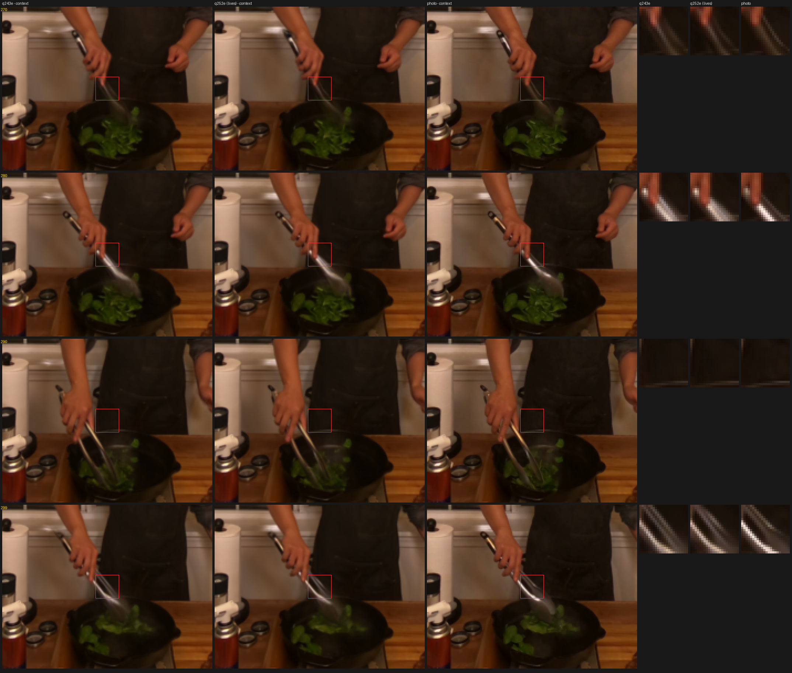
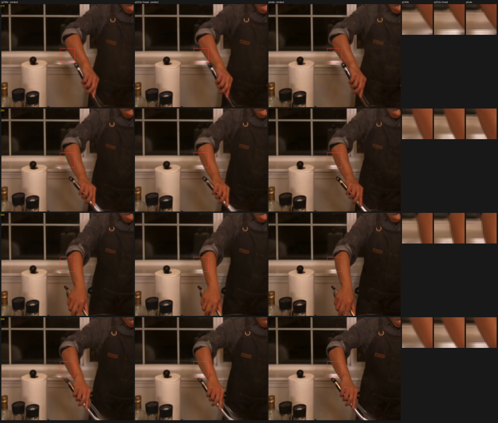
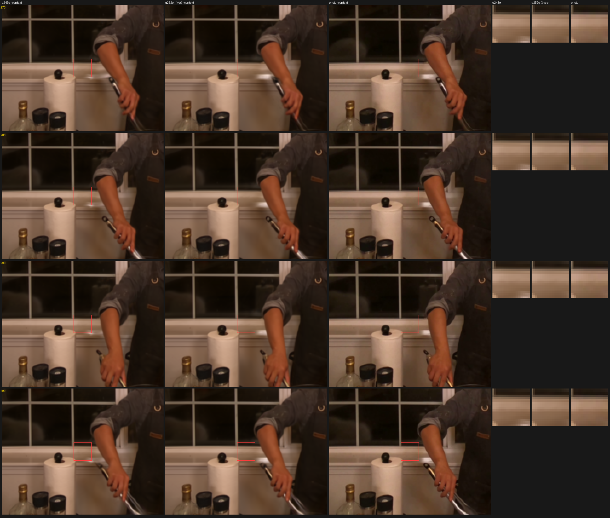
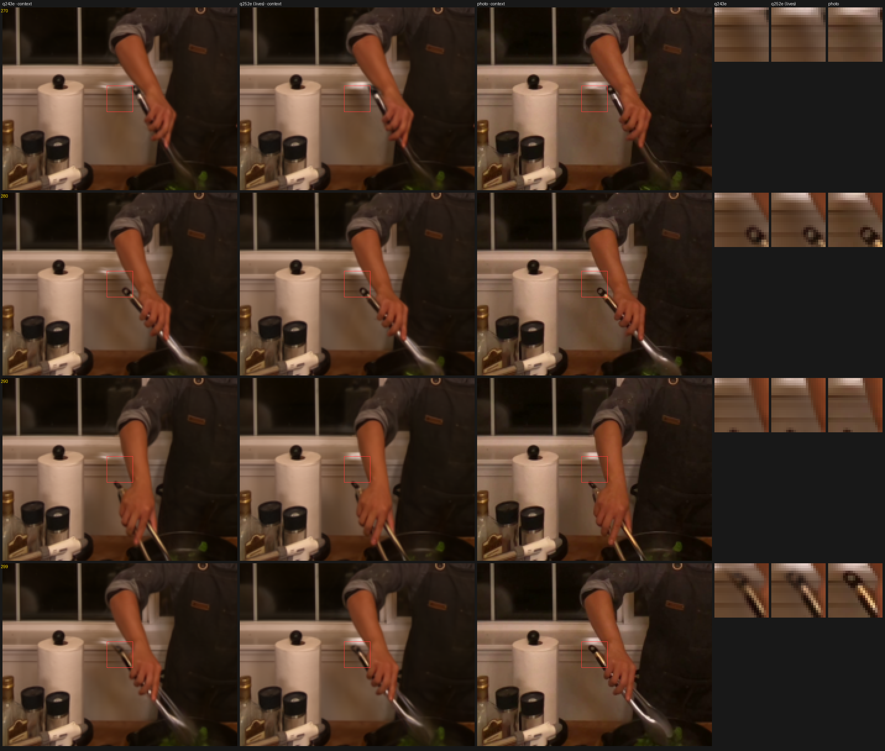
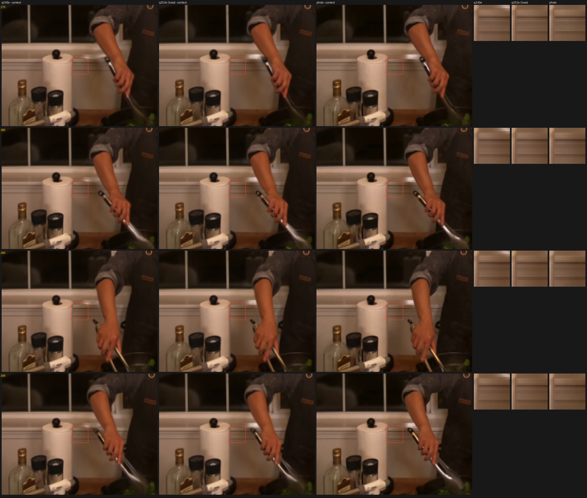
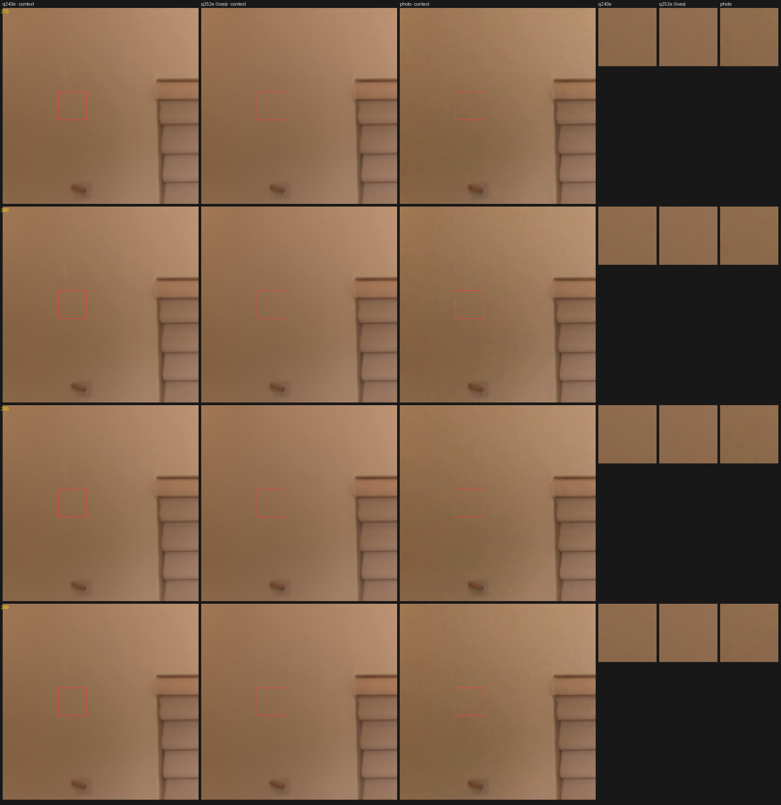
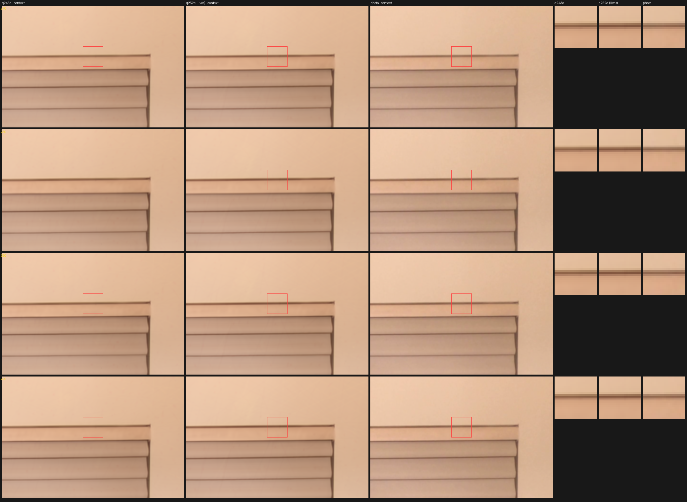
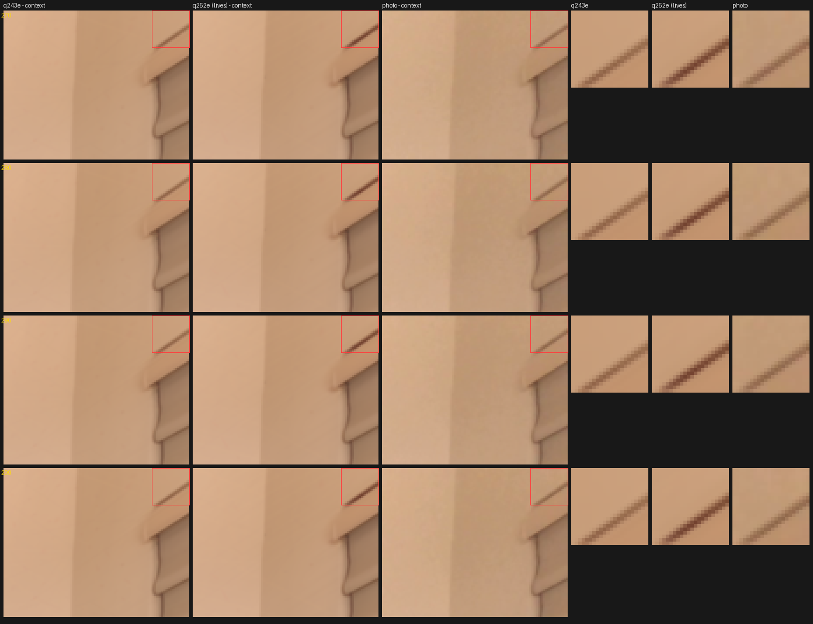
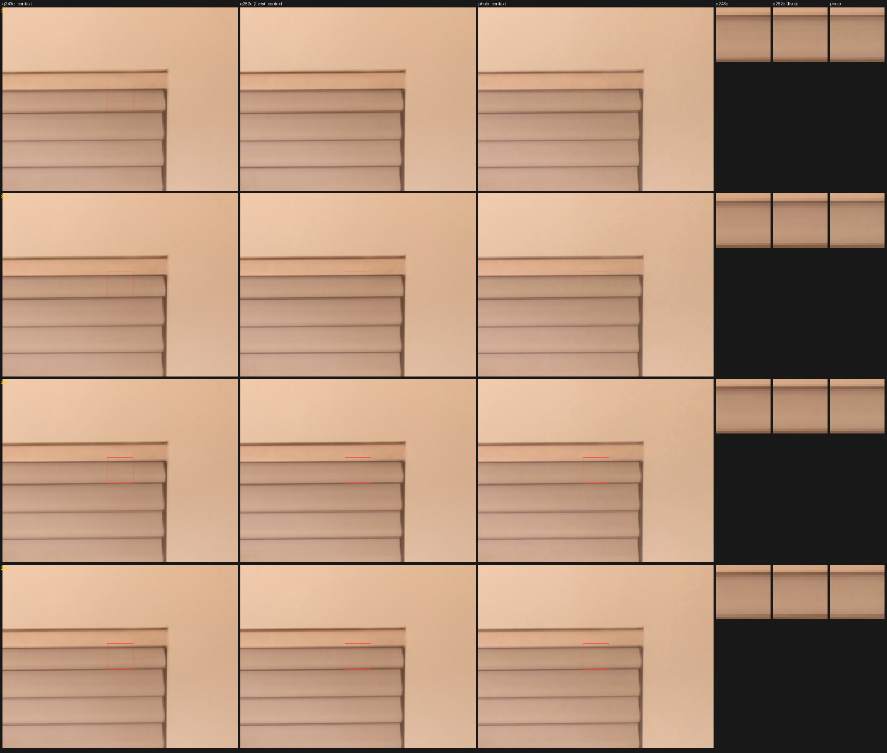
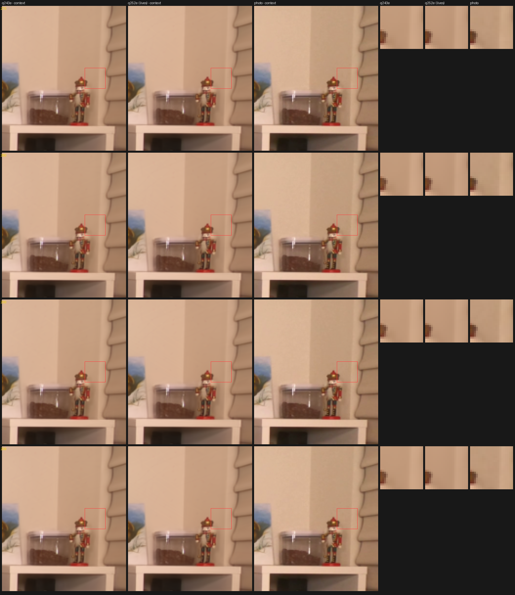
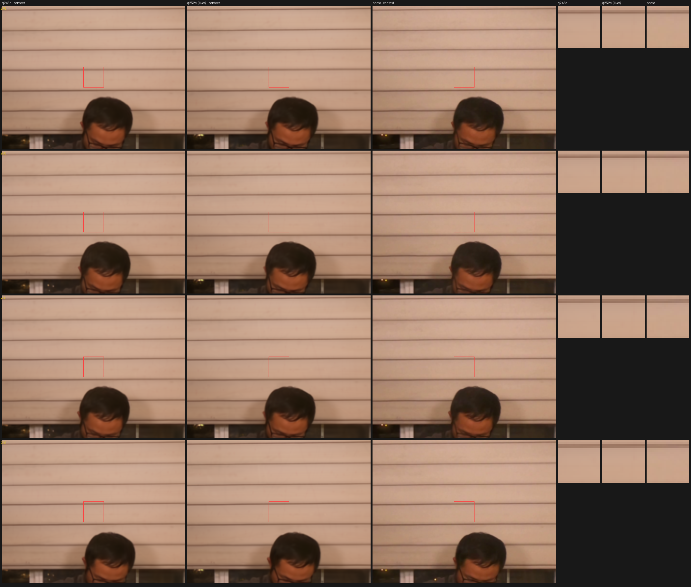
Lossless frames as the score drew them (calibration pose, the preparation's sync clock, nothing fitted), quarter size, enlarged without smoothing. One held-out camera. Train-only builds: no stream, no bit rate yet.